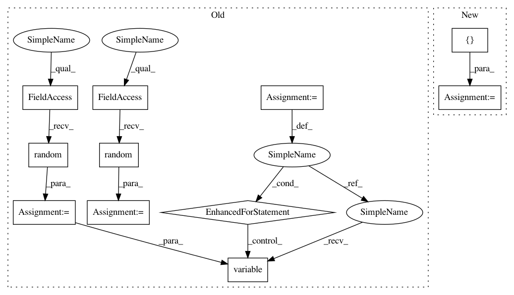

5e797436c3defd2d863ac1ffab11c48dbd42588e,tests/keras/backend/backend_test.py,TestBackend,test_conv2d,#TestBackend#,804
Before Change
BACKENDS, cntk_dynamicity=True,
data_format="channels_last")
xval = np.random.random(input_shape)
kernel_val = np.random.random(kernel_shape) - 0.5
// Test invalid use cases
for k in BACKENDS:
with pytest.raises(ValueError):
k.conv2d(k.variable(xval), k.variable(kernel_val), data_format="channels_middle")
def test_depthwise_conv_2d(self):
// TF kernel shape: (rows, cols, input_depth, depth_multiplier)
// channels_first input shape: (n, input_depth, rows, cols)
for (input_shape, kernel_shape, data_format) in [
After Change
def test_conv2d(self):
// TF kernel shape: (rows, cols, input_depth, depth)
// channels_first input shape: (n, input_depth, rows, cols)
for (input_shape, kernel_shape, data_format) in [
((2, 3, 4, 5), (2, 2, 3, 4), "channels_first"),
((2, 3, 5, 6), (4, 3, 3, 4), "channels_first"),
((1, 6, 5, 3), (3, 3, 3, 2), "channels_last")]:
check_two_tensor_operation("conv2d", input_shape, kernel_shape,
BACKENDS, cntk_dynamicity=True,
data_format=data_format)
def test_depthwise_conv_2d(self):
// TF kernel shape: (rows, cols, input_depth, depth_multiplier)
// channels_first input shape: (n, input_depth, rows, cols)
for (input_shape, kernel_shape, data_format) in [
In pattern: SUPERPATTERN
Frequency: 3
Non-data size: 11
Instances
Project Name: keras-team/keras
Commit Name: 5e797436c3defd2d863ac1ffab11c48dbd42588e
Time: 2018-02-25
Author: me@taehoonlee.com
File Name: tests/keras/backend/backend_test.py
Class Name: TestBackend
Method Name: test_conv2d
Project Name: keras-team/keras
Commit Name: ae72ea0bfe7f7041d6f7580427fa1f69158bab7e
Time: 2018-03-05
Author: me@taehoonlee.com
File Name: tests/keras/backend/backend_test.py
Class Name: TestBackend
Method Name: test_rnn_no_states
Project Name: keras-team/keras
Commit Name: 5e797436c3defd2d863ac1ffab11c48dbd42588e
Time: 2018-02-25
Author: me@taehoonlee.com
File Name: tests/keras/backend/backend_test.py
Class Name: TestBackend
Method Name: test_conv3d
Project Name: keras-team/keras
Commit Name: 5e797436c3defd2d863ac1ffab11c48dbd42588e
Time: 2018-02-25
Author: me@taehoonlee.com
File Name: tests/keras/backend/backend_test.py
Class Name: TestBackend
Method Name: test_conv2d